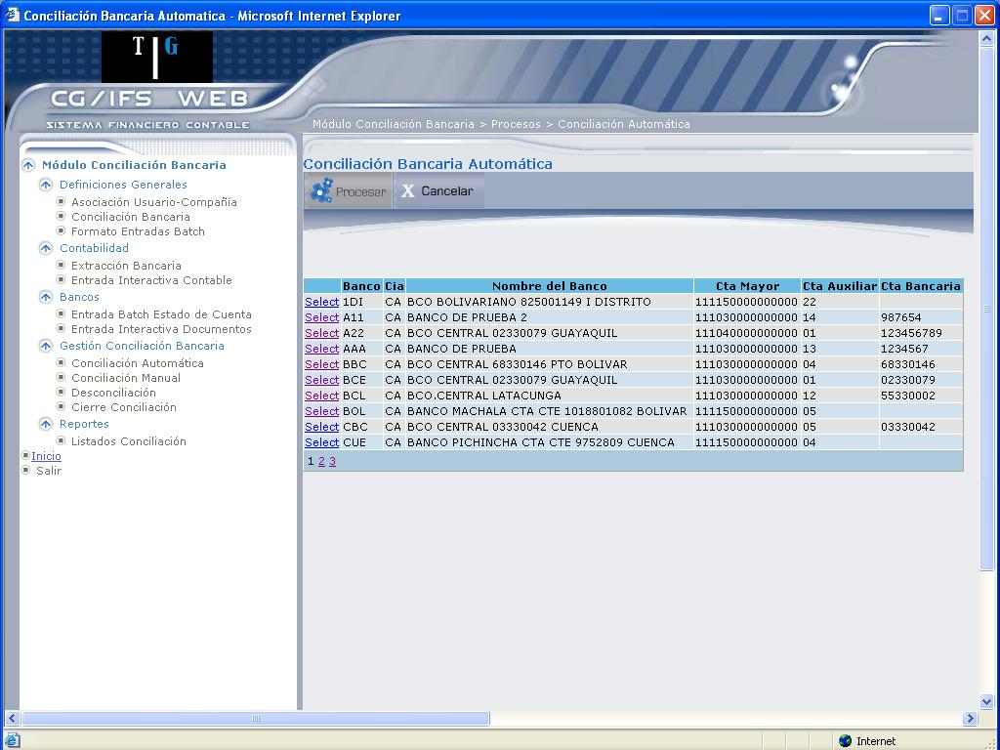
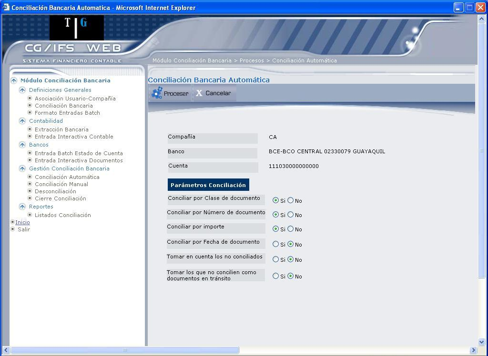

Conciliación Automática
Esta opción se usa para hacer la conciliación de documentos propiamente dicha. Compara la información extraída de CG/Web con la información del estado de cuenta.
Para poder hacer la conciliación de documentos; previamente se debe haber realizado el proceso de selección de información contable y haber introducido el estado de cuenta al banco. La pantalla que despliega es la que muestra 4.30.

Figura 4. Conciliación Bancaria Automática.
La pantalla despliega los bancos definidos en el sistema. El contenido de las columnas que aparecen en este formato es el siguiente:
Banco:
Despliega un código de tres caracteres que se usa para identificar al banco.
Cía.:
El código de compañía a la cual pertenece la cuenta bancaria.
Nombre del Banco:
Despliega el nombre del banco con que está registrado en la contabilidad.
Cta. Mayor:
Despliega la cuenta de mayor a la cual pertenece el banco.
Cta. Auxiliar:
Despliega el código de la cuenta auxiliar con el que identifica el banco en la contabilidad, sólo si el banco está registrado como auxiliar.
Cta. Bancaria:
Despliega el número de cuenta bancaria que identifica al banco en la contabilidad.
Seleccione el banco para el que desea ingresar los parámetros de la conciliación, dando clic en el vínculo Select, para desplegar la pantalla que muestra 4.31.

Figura 4. Parámetros de Automática.
Primero se puede observar: Código de , Código y Nombre del Banco y Número de Cuenta Bancaria.
Parámetros de Conciliación
Conciliar por Clase de Documento:
Marque el casillero “Si” si desea que durante el proceso de la conciliación se emparejen sólo las partidas que tengan la clase de documento igual tanto en la información contable como en el estado de cuenta. Si no desea que la clase de documento sea tomada en cuenta para el criterio de conciliación, marque el casillero “No”.
Conciliar por Número de documento:
Marque el casillero “Si” si desea que durante el proceso de la conciliación se emparejen sólo las partidas que tengan información contable como en el estado de cuenta. Si no desea que el número de documento sea tomado en cuenta para el criterio de conciliación marque el casillero “No”.
Conciliar por Importe:
Marque el casillero “Si” si desea que durante el proceso de la conciliación se empareje sólo las partidas que tengan el importe igual, tanto en la información contable como en el estado de cuenta. Si no desea que el importe sea tomado en cuenta para el criterio de la conciliación marque el casillero “No”.
Conciliar por Fecha de documento:
Marque el casillero “Si” si desea que el proceso de la conciliación, se realice tomando en cuenta el periodo establecido, caso contrario marque el casillero “No”.
Tomar en cuenta los no conciliados:
Marque el casillero “Si” si desea tomar en cuenta solo los no conciliados, de no ser así, marque el casillero “No”.
Tomar los que no concilien como documentos en tránsito:
Marque el casillero “Si” si desea tomar en cuenta los que no concilien como documentos en tránsito, caso contrario marque el casillero “No”.
BOTONES
Solo hay que tomar en cuenta que si se selecciona trabajar con los no conciliados al ver el cuadre por pantalla éste no cuadrará ya que solo están los no conciliados en los archivos de trabajo.
Los motivos por los cuales estos documentos no han sido conciliados pueden ser:
- Aún no se ha realizado el proceso de la conciliación.
- Las partidas no cumplen los criterios de la conciliación.
Created with the Personal Edition of HelpNDoc: Easily create EPub books